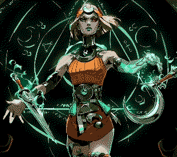
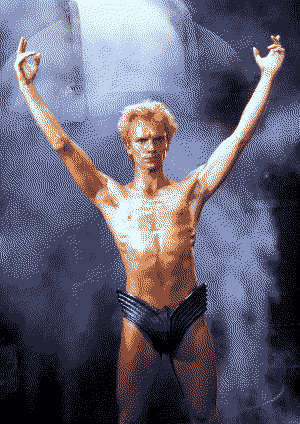
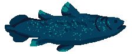
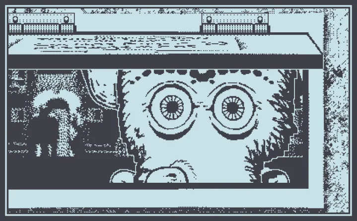

<html lang="en"></html>
  <head>
    <meta charset="UTF-8" />
    <meta name="viewport" content="width=device-width, initial-scale=1.0" />
    <title>&#10028; 2024 &#10028;</title>
    <link rel="icon" type="image/x-icon" href="img/pxflower3.png">
    <link rel="stylesheet" type="text/css" href="../style.css" />
    <link rel="stylesheet" type="text/css" href="blog_style.css" />
    <style>
.card{
    height: 300px;
    width: 200px;
    margin:10px;
    
    perspective: 600px;
    transition: .5s;
    h4 {
      background-color:rgba(0, 0, 0, 0.9);
      border-radius: 5px 5px 0 0;
    }
    p {
      background-color:rgba(0, 0, 0, 0.9);
      font-size:12px;
      color: rgb(152, 238, 219);
      }
    &:hover .card-front {
        transform: rotateX(-180deg);
    }
    &:hover .card-back {
        transform: rotateX(0deg);
    }
}

.card-front {
    height: 100%;
    width: 100%;
    border-radius: 6px;
    position: absolute;
    background-image: url(blog_img/Tarot_Card_Back.png);
    background-position: 50% 50%;
    background-size: cover;
    background-color: #000000;
    backface-visibility: hidden;
    transform: rotateX(0deg);
    transition: .5s;
    text-align: center;
}

.card-back {
    height: 100%;
    width: 100%;
    border-radius: 6px;
    background-position: 50% 50%;
    background-size: cover;
    display: flex;
    flex-direction: column;
    justify-content: space-between;
    background-color: #000000;
    backface-visibility: hidden;
    transform: rotateX(180deg);
    transition: .5s;
    text-align: center;
}
.back1 {
  background-image: url(blog_img/Cups05.png);
}
.back2 {
  background-image: url(blog_img/Pents14.png);
}
.back3 {
  background-image: url(blog_img/Wands01.png);
}
details {
  text-align: center;
  summary {
    color: rgb(152, 238, 219);
    text-shadow: 0 0 10px rgba(160, 240, 233, 0.5);
    }
}

    </style>
    <script src="https://kit.fontawesome.com/85bfb0bd19.js" crossorigin="anonymous"></script>
  </head>
 <!-- Page template: https://repth.neocities.org/theme -->
<body>
  <button onclick="topFunction()" id="to_top" title="Go to top"><span style="font-size:24px;">&#8593;</span>&nbsp;&nbsp;to top</button>
  <div id="container">
   
    <div class="logo">
      
    </div>

    <div id="box">
    <div id="contentboxes">
	  <div id="gridbg">
    <main>
      <!-- WEBLOG BOX -->
      <div>
        <h2>midnight solarium’s new years holiday roundup extravaganza: 2024 edition</h2>
        <p class="blogdetail"><time datetime="2024-06-30">dec 31, 2024</time><span> &#x2022; word count: 1416</span></p>

        <a href="../weblog.html"><i class="fa-solid fa-circle-arrow-left" style="color:#f2cf5c;text-shadow:0 0 10px rgba(243, 247, 118, 0.2);"></i> go back </a>

        <div style="display:inline;float:right;width:fit-content;">
        <script src="../fontchanger.js"></script>
      </div>

      <hr />
      <article>
        <p>I couldn’t decide on a single cohesive premise for this final weblog of the year, so I decided to mash 5 New Years themed blog post premises into a single mismatched potpourri of ideas. I doubt this will make for good SEO, but I’m sure the excellent title will make up for any losses.</p>
        <h3>Annual Award Show Pre-Show Awards</h3>
        <sup>(because we all know the most interesting awards are given out during the pre-show)</sup>
        <br/><br/>
        <div class="pic" style="width:264px;float:right;margin-left:20px;">
          <h2 class="subheader">bisexual.png</h2>
          <figure></figure>
      </div>
        <h4>Bisexual of the Year: Melinoë</h4>
        <p>Remember earlier this year when early access for Hades II dropped? Feels like just last week and also a lifetime ago. Anyway she is bisexual. You agree.</p>
        <h4>Distro of the Year: EndeavourOS</h4>
        <p>2024 was the year I started experimenting with different Linux distros. Over the past several months I’ve messed around with Manjaro, OpenSUSE, Pop!_OS, and Kali, but the one I’ve enjoyed the most was EndeavourOS. Mostly because they spell the word endeavour the way it should be spelled.</p>
        <h4>Animanga of the Year: Dungeon Meshi</h4>
        <p>Yeah this kinda took over my life for a little while. It’ll probably take over my life again once Season 2 comes out. This is a warning. Also watch Dungeon Meshi aka Delicious in Dungeon if you haven’t already it’s on Netflix it’s animated by Trigger and its manga is probably in most libraries and bookstores it has really good worldbuilding without feeling like homework it reminded me that cooking can be fun its characters are all my literal children it saved my life it</p>
        <h4>Movie of the Year: I Saw the TV Glow</h4>
        <p>I’m not saying this is the best movie that came out this year, but it’s definitely the movie that stuck with me the most. That’s all I’m gonna say on the matter. </p>
        <div class="pic" style="width:264px;float:right;margin-left:20px;">
          <h2 class="subheader">sting_dune.png</h2>
          <figure></figure>
      </div>
        <h4>Movie That Didn’t Come Out This Year of the Year: David Lynch’s Dune</h4>
        <p>I watched this movie for the first time this year and I have feelings about it. Like, does it pay respect to the themes of its source material? No. Does it work as its own standalone story? No. But it does have:</p>
        <ul>
          <li>soundtrack by Toto</li>
          <li>charmingly psychedelic special effects</li>
          <li>Kyle MacLachlan aka Better Timothée Chalamet aka Lynch’s babygirl</li>
          <li>a genuinely fascinating attempt to pack a story as dense as the Dune series into a 140-minute runtime</li>
          <li>synth</li>
        </ul>
        <h4>Dead Charity of the Year: Autism Speaks Canada</h4>
        <p>You won’t often see me celebrating the death of a charity, but I’ll make an exception for Autism fucking Speaks. Rest in fucking piss, assholes.</p>
        
        <h4>Coelacanth of the Year: the ones in Webfishing</h4>
        <p>Did you see it? I can’t!</p>
        <h4>Found Media of the Year: Subways of Your Mind by Fex</h4>
        <p>In November, the song formerly known as The Most Mysterious Song on the Internet was renamed to “Subways of Your Mind” by Fex. Presumably this is because they found a song that is even more mysterious, so the formerly most mysterious song was demoted back to its original title. I do not know what the new Most Mysterious Song on the Internet is, so if anyone has any information please don’t let me know because that would make it less mysterious.</p>
        <div class="pic" style="width:304px;float:left;margin-right:20px;">
          <h2 class="subheader">mars_after_midnight.png</h2>
          <figure></figure>
      </div>
        <h4>Playdate Game of the Year: Mars After Midnight</h4>
        <p>It’s a low-stakes management game. It’s full of goofy-looking monsters. It empathises with the working class. It’s made by the guy who made Papers Please and Obra Dinn.  And you get to crank it. What more could you want?</p>
        <h4>midnight solarium of the Year: midnight solarium</h4>
        <p>Last year, midnight solarium did not exist. Now it does. Therefore it is the best, and will continue to be the best until someone clones the repo and makes a better version. I cannot and will not stop anyone from doing this, and I assume the only reason this hasn’t been done is because this site is already perfect.</p>
        <h3>Words of the Year (that aren’t just gen z slang) (only because i dont keep up with gen z slang)</h3>
        <p>These are either words that accurately describe 2024, or just words I think are neat. The truth is for you to decide. That’s called death of the webmaster or whatever.</p>
        <p><em>aeipathy</em>: <sup>(1)</sup> an enduring or consuming passion <sup>(2)</sup> an unyielding disease or ailment</p>
        <p><em>ambient</em>: <sup>(1)</sup> existing or present on all sides <sup>(2)</sup> of or relating to the immediate surroundings  <sup>(3)</sup> creating a relaxing atmosphere</p>
        <p><em>denouement</em>: the end of a story, in which everything is explained, or the end result of a situation</p>
        <p><em>fester</em>: <sup>(1)</sup> to cause increasing poisoning, irritation, or bitterness <sup>(2)</sup> to undergo or exist in a state of progressive deterioration</p>
        <p><em>lucubration</em>: <sup>(1)</sup> writing produced by laborious effort or study <sup>(2)</sup> the act of studying late into the night, esp. by candlelight</p>
        <p><em>satisfice</em>: <sup>(1)</sup> to pursue the minimum satisfactory condition or outcome <sup>(2, obsolete)</sup> to satisfy</p>
        <p><em>slop</em>: <sup>(1)</sup> unappetizing semi-liquid food, often used as animal food <sup>(2)</sup> sentimental language or material <sup>(3)</sup> spill or flow over the edge of a container, typically as a result of careless handling</p>
        <p><em>uchronia</em>: an idealized or fictional conception of a particular period of time, especially in the past</p>
        <p><em>vampirarchy</em>: a set of rulers comparable to vampires</p>
        <h3>Lessons I Have Learned This Year</h3>
        <p>I’ve been slacking on writing my letters to Princess Celestia so I’m mailing ‘em out in bulk at the end of the year. I don’t think any of these have anything to do with the magic of friendship but maybe she’ll also accept lessons about savings accounts.</p>
        <ul>
          <li>slow cookers are a godsend</li>
          <li>it is so so so easy to stop making time for your hobbies. do not let that happen</li>
          <li>other peoples’ approval is a poison that will eventually kill you</li>
          <li>life is 100x better with a decent pair of earplugs</li>
          <li>take time to appreciate that local store with a friendly atmosphere while it lasts</li>
          <li>troubleshooting Linux boot issues is a bitch and a half</li>
          <li>dual booting with kali linux is not a good idea in general</li>
          <li>having a good credit score will open up so many doors that it’s quite frankly disturbing</li>
          <li>never associate with people whose opinions are based on kneejerk reactions</li>
          <li>progress isn’t always visible, but that doesn’t mean it isn’t happening</li>
          <li>being the person who reaches out and makes plans is awesome actually</li>
          <li>opening a TFSA is probably a good idea</li>
          <li>I probably shouldn’t travel to the united states anytime soon</li>
          <li>i am officially too old to keep up with trends and i should probably just accept it</li>
          <li>respecting someone does not mean you should take their advice</li>
          <li>actually, most peoples’ advice sucks ass. take everything with a grain of salt</li>
          <li>that includes everything ive written here. these are my lessons, not yours</li>
        </ul>
        <h3>2025 Tarot Card Reading</h3>
        <p>I can read the future by the way. And the past. And present. And I’m gonna reveal exactly what’s going on with everyone who reads this. </p>
        <div class="flexrow">
        <div class="card">
          <div class="card-front"><h4>Past</h4></div>
          <div class="card-back back1">
            <h4>5 of Cups</h4>
            <p>(disappointment, discontentment, grief)</p>
          </div>
        </div>
        <div class="card">
          <div class="card-front"><h4>Present</h4></div>
          <div class="card-back back2">
            <h4>King of Pentacles</h4>
            <p>(abundance, ambition, protection)</p>
          </div>
        </div>
        <div class="card">
          <div class="card-front"><h4>Future</h4></div>
          <div class="card-back back3">
            <h4>Ace of Wands</h4>
            <p>(creation, initiative, new beginnings)</p>
          </div>
        </div>
      </div>
      <details><summary>Full Reading</summary>
      <p>Congrats, you’re officially out of your flop era! Things were pretty miserable for a while, but now you’ve started building yourself back up. Unfortunately you have also become a monarchist. Or maybe just a materialist. Whatever, you seem like the type who shops at Temu. Please stop. Spend less time acquiring and more time creating. The cards demand it.</p>
      <p>Or don’t. They’re just cards.</p>
      </details>
      <h3>My Nebulous Goals for 2025</h3>
      <p>I’m not brave enough to make promises for all of my goals, but I sincerely hope that I accomplish at least one.</p>
      <ul>
        <li><strong>stay alive</strong></li>
        <li>move to The Medium-Sized City</li>
        <li>find a job that’s actually relevant to my skillset</li>
        <li>go on leisurely walks and lame stuff like that</li>
        <li>get better at networking (computers)</li>
        <li>get better at networking (people)</li>
        <li>learn how to use a drop spindle</li>
        <li>upcycle more old clothing</li>
        <li>drink less coffee and more tea</li>
        <li>read one of those books i keep saying I’ll read</li>
        <li>upgrade my homelab</li>
        <li>maybe brush up on my ASL (I’ve gotten rusty)</li>
        <li>add more stuff to this website. preferably weird niche stuff made to appeal to myself and no one else. this weblog is probably a good example</li>
      </ul>

      </article>
      <a href="../weblog.html"><i class="fa-solid fa-circle-arrow-left" style="color:#f2cf5c;text-shadow:0 0 10px rgba(243, 247, 118, 0.2);padding-bottom:30px;"></i> go back </a>
      </div>
      <!-- END CONTENT -->
    </main>
	  </div>
    </div>
    </div>
    <script>
      // Get the button
      let mybutton = document.getElementById("to_top");

      // When the user scrolls down 20px from the top of the document, show the button
      window.onscroll = function() {scrollFunction()};

      function scrollFunction() {
        if (document.body.scrollTop > 20 || document.documentElement.scrollTop > 20) {
        mybutton.style.display = "block";
        } else {
        mybutton.style.display = "none";
        }
      }

      // When the user clicks on the button, scroll to the top of the document
      function topFunction() {
        document.body.scrollTop = 0;
        document.documentElement.scrollTop = 0;
      }
    </script>
</body>
</html>
